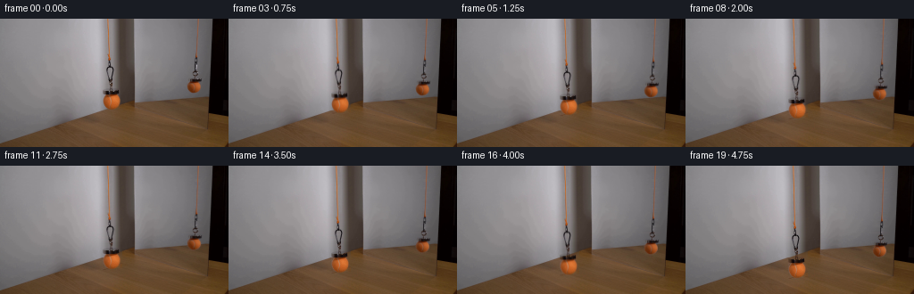
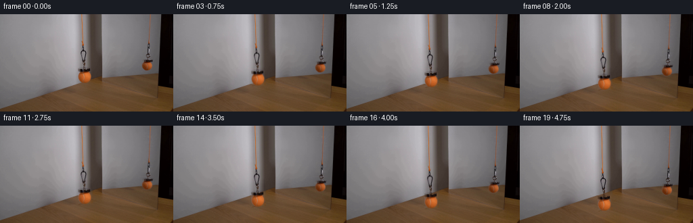
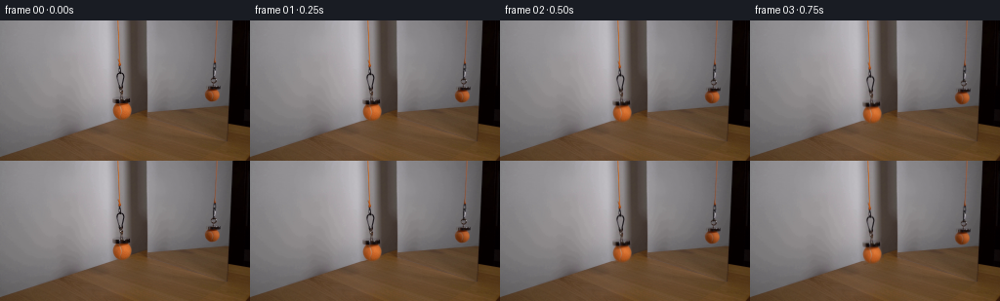

CODING AGENTS AS PIXEL WORLD MODELS
traex/GPT-6.1-Sol · 0116
点击播放 · 原生 RGB 像素
逐轮保存的候选
回放视频、检查图与代码变化。
每份候选均可单独播放。实际图片检查记录在下方工具轨迹中。
候选 01播放与检查图
点击播放 · 原生 RGB 像素

展开代码变化
--- 上一保存版本
+++ 本次保存版本
@@ -0,0 +1,154 @@
+from pathlib import Path
+import numpy as np
+from PIL import Image, ImageDraw
+from scipy import ndimage, sparse
+from scipy.sparse.linalg import spsolve
+import artifact_io
+
+ROOT=Path(__file__).resolve().parent
+H,W=144,256
+Y,X=np.mgrid[:H,:W].astype(float)
+
+def region(rects):
+ m=np.zeros((H,W),bool)
+ for x0,y0,x1,y1 in rects:
+ m |= (X>=x0)&(X<=x1)&(Y>=y0)&(Y<=y1)
+ return m
+
+def guided_fill(image, guide, mask):
+ """Harmonic continuation of the small texture residual over a clean guide."""
+ iy,ix=np.where(mask)
+ idx=np.full((H,W),-1,int); idx[iy,ix]=np.arange(len(iy))
+ rows=[]; cols=[]; vals=[]; rhs=np.zeros((len(iy),3))
+ residual=image-guide
+ for k,(y,x) in enumerate(zip(iy,ix)):
+ count=0
+ for dy,dx in [(1,0),(-1,0),(0,1),(0,-1)]:
+ yy,xx=y+dy,x+dx
+ if yy<0 or yy>=H or xx<0 or xx>=W: continue
+ count+=1
+ j=idx[yy,xx]
+ if j>=0:
+ rows.append(k);cols.append(j);vals.append(-1.)
+ else:rhs[k]+=residual[yy,xx]
+ rows.append(k);cols.append(k);vals.append(float(count))
+ a=sparse.csr_matrix((vals,(rows,cols)),shape=(len(iy),len(iy)))
+ solved=spsolve(a,rhs)
+ out=image.copy();out[iy,ix]=guide[iy,ix]+solved
+ return out
+
+def build_background(im):
+ main=region([(118,0,125,53),(118,52,129,71),(122,69,127,80),
+ (114,78,136,102)])
+ refl=region([(218,0,224,58),(215,57,223,65),(216,64,222,68),
+ (209,66,226,84)])
+ guide=im.copy()
+ # The nearby fixed mirror jamb has a steep transverse light gradient.
+ # Reconstruct it with the intact row just above the suspended ball.
+ prof=im[76].copy()
+ for c in range(3):
+ prof[122:126,c]=np.interp(np.arange(122,126),[121,126],prof[[121,126],c])
+ for c in range(3):
+ left=im[:,114,c].copy();right=im[:,136,c].copy()
+ # Below the wall's termination this column is on the tabletop.
+ right[94:]=np.interp(np.arange(94,H),[94,102,143],[63,60,60]) + (c==0)*1-(c==1)*10-(c==2)*16
+ # Match the measured last few unaffected wall rows per colour.
+ v=np.median(im[88:94,136,c])
+ right[94:]=v-0.28*np.minimum(np.arange(94,H)-94,9)
+ u=(prof[:,c]-prof[136,c])/(prof[114,c]-prof[136,c])
+ wall=right[:,None]+(left-right)[:,None]*u[None,:]
+ guide[:,114:137,c]=wall[:,114:137]
+ # The fixed timber surface slopes in projection behind the near ball.
+ xt=np.arange(114,137)
+ edge=142.9-.349*xt
+ dep=Y[:,114:137]-edge[None,:]
+ table=im[106,114:137,:][None,:,:].copy()+np.zeros((H,23,3))
+ dark=.22*np.clip((xt-118)/18,0,1)[None,:]*np.exp(-np.maximum(dep,0)/3)
+ table *= (1-dark[:,:,None])
+ mix=np.clip((dep+.55)/1.2,0,1)
+ guide[:,114:137]=guide[:,114:137]*(1-mix[:,:,None])+table*mix[:,:,None]
+ # The far image is in the mirror: neighbouring columns give the clean
+ # wall, and their smooth change in intensity continues behind the image.
+ for y in range(85):
+ for c in range(3):
+ xs=np.array([205,206,207,208,227,228,229,230])
+ p=np.polyfit(xs,im[y,xs,c],2)
+ guide[y,209:227,c]=np.polyval(p,np.arange(209,227))
+ bg=guided_fill(im,guide,main|refl)
+ return bg,main,refl
+
+def make_alpha(im,bg,support,ball):
+ cx,cy,rx,ry=ball
+ r2=((X-cx)/rx)**2+((Y-cy)/ry)**2
+ dif=bg.mean(2)-im.mean(2)
+ # Thin dark connectors preserve the antialiasing already in the photograph.
+ a=np.clip(dif/np.maximum(bg.mean(2)-17,25),0,1)
+ a=np.where(a>.76,1,a)
+ # Orange fibre can be transparent at the subpixel boundary of the cord.
+ chrom=im[:,:,0]-im[:,:,1]
+ bchrom=bg[:,:,0]-bg[:,:,1]
+ cord=np.clip((chrom-bchrom)/44,0,1)
+ a=np.maximum(a,cord)
+ a *= support
+ inside=(r2<.70)&support
+ # Fit an unoccluded low-order colour field for the ball's edge matte.
+ feats=np.stack([np.ones_like(X),(X-cx)/rx,(Y-cy)/ry,
+ ((X-cx)/rx)**2,((Y-cy)/ry)**2,
+ (X-cx)*(Y-cy)/(rx*ry)],axis=-1)
+ coef=np.linalg.lstsq(feats[inside],chrom[inside],rcond=None)[0]
+ field=np.maximum(feats@coef,25)
+ edge_alpha=np.clip((chrom-bchrom)/np.maximum(field-bchrom,20),0,1)
+ near=(r2<1.25)&(Y>cy-ry-0.5)&support
+ # Inside the silhouette the textured original is wholly opaque.
+ edge_alpha=np.where(r2<.77,1,edge_alpha)
+ a=np.where(near,np.maximum(a,edge_alpha),a)
+ a=np.where(inside,1,a)
+ # The slight defocus around the attachment is carried along with it.
+ d=np.max(np.abs(im-bg),axis=2)
+ a=np.where((d<1.2)&(a<.2),0,a)
+ return np.clip(a,0,1)
+
+def transport(bg, im, alpha, support, displacement, join, xshift=0.):
+ # Feed more of the orange cord from offscreen; only its upper, almost
+ # straight length extends. The magnet, link and ball translate together.
+ sy=np.where(Y<join+displacement,Y*join/(join+displacement),Y-displacement)
+ sx=X-xshift*np.minimum(Y/(join+displacement),1)
+ coords=np.stack([sy,sx])
+ wa=ndimage.map_coordinates(alpha,coords,order=1,mode='constant',cval=0,prefilter=False)
+ premul=im-bg*(1-alpha[:,:,None])
+ premul=np.clip(premul,0,255*alpha[:,:,None])
+ rgb=np.stack([ndimage.map_coordinates(premul[:,:,c],coords,order=1,mode='constant',cval=0,prefilter=False) for c in range(3)],axis=-1)
+ return rgb,wa
+
+def generate():
+ original=np.asarray(Image.open(ROOT/'first_frame.png').convert('RGB'),dtype=np.uint8)
+ im=original.astype(float)
+ bg,ms,rs=build_background(im)
+ am=make_alpha(im,bg,ms,(124.9,92.6,9.8,8.85))
+ ar=make_alpha(im,bg,rs,(217.35,76.25,7.85,6.65))
+ # Retain a clean, fixed scene except for the extracted assembly.
+ # The matte reconstruction is adjusted so its zero-motion composite
+ # reproduces the source, including faint optical softness.
+ clean=bg.copy()
+ a=np.maximum(am,ar)
+ # Tiny unmodelled texture residuals remain fixed instead of floating.
+ clean=np.where((ms|rs)[:,:,None],bg,im)
+ frames=[original]
+ for k in range(1,20):
+ t=k/19
+ # A slow controlled lowering, with gentle starting/stopping, no bounce.
+ travel=24*(t-.065*np.sin(2*np.pi*t)/(2*np.pi))
+ sway=.20*np.sin(np.pi*t)*np.sin(1.25*np.pi*t)
+ pm,ma=transport(clean,im,am,ms,travel,40,sway)
+ pr,ra=transport(clean,im,ar,rs,travel*.79,42,sway*.79)
+ frame=clean*(1-ma[:,:,None])+pm
+ frame=frame*(1-ra[:,:,None])+pr
+ frames.append(np.clip(np.rint(frame),0,255).astype(np.uint8))
+ frames=np.stack(frames)
+ (ROOT/'.tmp').mkdir(exist_ok=True)
+ Image.fromarray(np.clip(np.rint(bg),0,255).astype('uint8')).save(ROOT/'.tmp/background.png')
+ Image.fromarray((np.maximum(am,ar)*255).astype('uint8')).save(ROOT/'.tmp/matte.png')
+ np.save(ROOT/'.tmp/candidate.npy',frames)
+ artifact_io.save(frames,ROOT)
+
+if __name__=='__main__':generate()
候选 02播放与检查图
点击播放 · 原生 RGB 像素


展开代码变化
--- 上一保存版本
+++ 本次保存版本
@@ -45,9 +45,9 @@
guide=im.copy()
# The nearby fixed mirror jamb has a steep transverse light gradient.
# Reconstruct it with the intact row just above the suspended ball.
- prof=im[76].copy()
+ prof=np.median(im[31:38],axis=0)
for c in range(3):
- prof[122:126,c]=np.interp(np.arange(122,126),[121,126],prof[[121,126],c])
+ prof[121:123,c]=np.interp(np.arange(121,123),[120,123],prof[[120,123],c])
for c in range(3):
left=im[:,114,c].copy();right=im[:,136,c].copy()
# Below the wall's termination this column is on the tabletop.
@@ -89,6 +89,10 @@
bchrom=bg[:,:,0]-bg[:,:,1]
cord=np.clip((chrom-bchrom)/44,0,1)
a=np.maximum(a,cord)
+ # Polished parts of the small magnetic link can be much brighter than
+ # the wall rather than darker, and travel with the dark link.
+ bright=np.max(im-bg,axis=2)
+ a=np.maximum(a,np.clip((bright-1)/65,0,1))
a *= support
inside=(r2<.70)&support
# Fit an unoccluded low-order colour field for the ball's edge matte.
@@ -106,6 +110,11 @@
# The slight defocus around the attachment is carried along with it.
d=np.max(np.abs(im-bg),axis=2)
a=np.where((d<1.2)&(a<.2),0,a)
+ # A physically valid foreground matte also reproduces the original
+ # mixed edge pixels exactly when its displacement is zero.
+ required_dark=np.max(np.maximum(bg-im,0)/np.maximum(bg,1),axis=2)
+ required_light=np.max(np.maximum(im-bg,0)/np.maximum(255-bg,1),axis=2)
+ a=np.maximum(a,np.maximum(required_dark,required_light)*support)
return np.clip(a,0,1)
def transport(bg, im, alpha, support, displacement, join, xshift=0.):
可观测工具轨迹
实际执行的命令与返回图片。
命令 1exit 0
/bin/bash -lc 'ls -la && cat prompt.txt && cat GENERATION_RULES.md'
命令 2exit 0
/bin/bash -lc "cat artifact_io.py && python - <<'PY'
from PIL import Image
import numpy as np
im=np.array(Image.open('first_frame.png'));print(im.shape)
print('range',im.min((0,1)),im.max((0,1)))
# ascii grayscale
im=np.array(Image.open('first_frame.png').resize((128,72)))
g=(im.mean(2)); chars=' .:-=+*#%@'
for row in g:print(''.join(chars[min(9,int(x*10/256))] for x in row))
PY"命令 3exit 0
/bin/bash -lc "python - <<'PY'
import numpy as np
from PIL import Image
im=np.array(Image.open('first_frame.png')).astype(int)
# RGB to HSV; principal named pixel display grid
import colorsys
im2=np.array(Image.open('first_frame.png').resize((128,72))).astype(int)
for y,row in enumerate(im2):
s=''
for r,g,b in row:
h,sat,v=colorsys.rgb_to_hsv(r/255,g/255,b/255)
if v<.1:c=' '
elif sat<.13:c='.'
elif .04<h<.12 and sat>.35:c='o'
elif .12<h<.25 and sat>.3:c='Y'
elif .25<h<.48 and sat>.25:c='G'
elif .48<h<.7 and sat>.25:c='B'
elif h>.85 or h<.04:c='R'
else:c='p'
s+=c
print(f'{2*y:3} {s}')
print('RGB points')
for y in range(30,105,5):
print(y,' '.join(f'{x}:{im[y,x].tolist()}' for x in [110,115,120,125,130,200,205,210,215,220,225]))
PY"命令 4exit 0
/bin/bash -lc "python - <<'PY'
from PIL import Image
import numpy as np
im=np.array(Image.open('first_frame.png')); chars=' .:-=+*#%@'
for box in [(110,30,142,106),(200,24,231,87)]:
x0,y0,x1,y1=box;print('crop',box)
print(' '+''.join(str(x//10%10)for x in range(x0,x1)));print(' '+''.join(str(x%10)for x in range(x0,x1)))
for y in range(y0,y1):
print(f'{y:3} '+''.join(chars[min(9,int(x*10/256))]for x in im[y,x0:x1].mean(1)))
print('rows RGB @x110..138 for y80..102')
for y in [78,80,81,82,83,84,85,86,87,90,94,98,100,102]:
print(y,','.join(f'{x}:{tuple(im[y,x])}' for x in range(113,140)))
PY"命令 5exit 0
/bin/bash -lc "python - <<'PY'
import importlib.util
for n in ['cv2','scipy','numpy','PIL']:
print(n, bool(importlib.util.find_spec(n)))
from PIL import Image
import numpy as np
im=np.array(Image.open('first_frame.png'));chars=' .:-=+*#%@'
for box in [(114,0,130,80),(208,0,226,72)]:
x0,y0,x1,y1=box;print('CROP',box)
for y in range(y0,y1):print(f'{y:3} '+''.join(chars[min(9,int(x*10/256))]for x in im[y,x0:x1].mean(1)))
PY"命令 6exit 0
/bin/bash -lc "python - <<'PY'
from PIL import Image
import numpy as np
im=np.array(Image.open('first_frame.png')).astype(int)
for y in [0,20,40,48,54,60,70,76,80,84,88,90,94,96,98,100,102,104,106,110,115,120]:
print('y',y,' '.join(f'{x}:({im[y,x,0]},{im[y,x,1]},{im[y,x,2]})'for x in [105,110,113,114,115,116,117,118,119,120,123,126,129,132,135,138,141,144,147,150,154,160]))
PY"命令 7exit 1
/bin/bash -lc "python - <<'PY'
from PIL import Image
import numpy as np
im=np.array(Image.open('first_frame.png')).astype(float)
for x in range(90,161):
m=(im[:,x,0]-im[:,x,2]>25)
# transition continuous table from bottom upward
y=143
while y>0 and m[y,x]:y-=1
print(x,y+1, im[max(0,y-1):y+3,x].round().astype(int).tolist())
PY"命令 8exit 0
/bin/bash -lc "python - <<'PY'
from PIL import Image
import numpy as np
im=np.array(Image.open('first_frame.png')).astype(float)
for x in range(105,146):
m=(im[:,x,0]-im[:,x,2]>25)
y=143
while y>0 and m[y]:y-=1
print(x,y+1)
PY"命令 9exit 0
/bin/bash -lc "python - <<'PY'
import numpy as np
from PIL import Image
im=np.array(Image.open('first_frame.png')).astype(int)
for y in range(80,116,2):
print(y,' '.join(f'{x}:{tuple(im[y,x])}'for x in range(225,249,2)))
PY"命令 10exit 0
/bin/bash -lc "python - <<'PY'
from PIL import Image
import numpy as np
im=np.array(Image.open('first_frame.png')).astype(int)
for y in range(78,103):
print(y,' '.join(f'{x}:{im[y,x].tolist()}'for x in range(114,138)))
PY"命令 11exit 0
/bin/bash -lc "python - <<'PY'
from PIL import Image
import numpy as np
im=np.array(Image.open('first_frame.png')).astype(int)
for y in range(64,84):
print(y,' '.join(f'{x}:{im[y,x].tolist()}'for x in range(208,226)))
PY"命令 12exit 0
/bin/bash -lc "cat > generate.py <<'PY'
from pathlib import Path
import numpy as np
from PIL import Image, ImageDraw
from scipy import ndimage, sparse
from scipy.sparse.linalg import spsolve
import artifact_io
ROOT=Path(__file__).resolve().parent
H,W=144,256
Y,X=np.mgrid[:H,:W].astype(float)
def region(rects):
m=np.zeros((H,W),bool)
for x0,y0,x1,y1 in rects:
m |= (X>=x0)&(X<=x1)&(Y>=y0)&(Y<=y1)
return m
def guided_fill(image, guide, mask):
\"\"\"Harmonic continuation of the small texture residual over a clean guide.\"\"\"
iy,ix=np.where(mask)
idx=np.full((H,W),-1,int); idx[iy,ix]=np.arange(len(iy))
rows=[]; cols=[]; vals=[]; rhs=np.zeros((len(iy),3))
residual=image-guide
for k,(y,x) in enumerate(zip(iy,ix)):
count=0
for dy,dx in [(1,0),(-1,0),(0,1),(0,-1)]:
yy,xx=y+dy,x+dx
if yy<0 or yy>=H or xx<0 or xx>=W: continue
count+=1
j=idx[yy,xx]
if j>=0:
rows.append(k);cols.append(j);vals.append(-1.)
else:rhs[k]+=residual[yy,xx]
rows.append(k);cols.append(k);vals.append(float(count))
a=sparse.csr_matrix((vals,(rows,cols)),shape=(len(iy),len(iy)))
solved=spsolve(a,rhs)
out=image.copy();out[iy,ix]=guide[iy,ix]+solved
return out
def build_background(im):
main=region([(118,0,125,53),(118,52,129,71),(122,69,127,80),
(114,78,136,102)])
refl=region([(218,0,224,58),(215,57,223,65),(216,64,222,68),
(209,66,226,84)])
guide=im.copy()
# The nearby fixed mirror jamb has a steep transverse light gradient.
# Reconstruct it with the intact row just above the suspended ball.
prof=im[76].copy()
for c in range(3):
prof[122:126,c]=np.interp(np.arange(122,126),[121,126],prof[[121,126],c])
for c in range(3):
left=im[:,114,c].copy();right=im[:,136,c].copy()
# Below the wall's termination this column is on the tabletop.
right[94:]=np.interp(np.arange(94,H),[94,102,143],[63,60,60]) + (c==0)*1-(c==1)*10-(c==2)*16
# Match the measured last few unaffected wall rows per colour.
v=np.median(im[88:94,136,c])
right[94:]=v-0.28*np.minimum(np.arange(94,H)-94,9)
u=(prof[:,c]-prof[136,c])/(prof[114,c]-prof[136,c])
wall=right[:,None]+(left-right)[:,None]*u[None,:]
guide[:,114:137,c]=wall[:,114:137]
# The fixed timber surface slopes in projection behind the near ball.
xt=np.arange(114,137)
edge=142.9-.349*xt
dep=Y[:,114:137]-edge[None,:]
table=im[106,114:137,:][None,:,:].copy()+np.zeros((H,23,3))
dark=.22*np.clip((xt-118)/18,0,1)[None,:]*np.exp(-np.maximum(dep,0)/3)
table *= (1-dark[:,:,None])
mix=np.clip((dep+.55)/1.2,0,1)
guide[:,114:137]=guide[:,114:137]*(1-mix[:,:,None])+table*mix[:,:,None]
# The far image is in the mirror: neighbouring columns give the clean
# wall, and their smooth change in intensity continues behind the image.
for y in range(85):
for c in range(3):
xs=np.array([205,206,207,208,227,228,229,230])
p=np.polyfit(xs,im[y,xs,c],2)
guide[y,209:227,c]=np.polyval(p,np.arange(209,227))
bg=guided_fill(im,guide,main|refl)
return bg,main,refl
def make_alpha(im,bg,support,ball):
cx,cy,rx,ry=ball
r2=((X-cx)/rx)**2+((Y-cy)/ry)**2
dif=bg.mean(2)-im.mean(2)
# Thin dark connectors preserve the antialiasing already in the photograph.
a=np.clip(dif/np.maximum(bg.mean(2)-17,25),0,1)
a=np.where(a>.76,1,a)
# Orange fibre can be transparent at the subpixel boundary of the cord.
chrom=im[:,:,0]-im[:,:,1]
bchrom=bg[:,:,0]-bg[:,:,1]
cord=np.clip((chrom-bchrom)/44,0,1)
a=np.maximum(a,cord)
a *= support
inside=(r2<.70)&support
# Fit an unoccluded low-order colour field for the ball's edge matte.
feats=np.stack([np.ones_like(X),(X-cx)/rx,(Y-cy)/ry,
((X-cx)/rx)**2,((Y-cy)/ry)**2,
(X-cx)*(Y-cy)/(rx*ry)],axis=-1)
coef=np.linalg.lstsq(feats[inside],chrom[inside],rcond=None)[0]
field=np.maximum(feats@coef,25)
edge_alpha=np.clip((chrom-bchrom)/np.maximum(field-bchrom,20),0,1)
near=(r2<1.25)&(Y>cy-ry-0.5)&support
# Inside the silhouette the textured original is wholly opaque.
edge_alpha=np.where(r2<.77,1,edge_alpha)
a=np.where(near,np.maximum(a,edge_alpha),a)
a=np.where(inside,1,a)
# The slight defocus around the attachment is carried along with it.
d=np.max(np.abs(im-bg),axis=2)
a=np.where((d<1.2)&(a<.2),0,a)
return np.clip(a,0,1)
def transport(bg, im, alpha, support, displacement, join, xshift=0.):
# Feed more of the orange cord from offscreen; only its upper, almost
# straight length extends. The magnet, link and ball translate together.
sy=np.where(Y<join+displacement,Y*join/(join+displacement),Y-displacement)
sx=X-xshift*np.minimum(Y/(join+displacement),1)
coords=np.stack([sy,sx])
wa=ndimage.map_coordinates(alpha,coords,order=1,mode='constant',cval=0,prefilter=False)
premul=im-bg*(1-alpha[:,:,None])
premul=np.clip(premul,0,255*alpha[:,:,None])
rgb=np.stack([ndimage.map_coordinates(premul[:,:,c],coords,order=1,mode='constant',cval=0,prefilter=False) for c in range(3)],axis=-1)
return rgb,wa
def generate():
original=np.asarray(Image.open(ROOT/'first_frame.png').convert('RGB'),dtype=np.uint8)
im=original.astype(float)
bg,ms,rs=build_background(im)
am=make_alpha(im,bg,ms,(124.9,92.6,9.8,8.85))
ar=make_alpha(im,bg,rs,(217.35,76.25,7.85,6.65))
# Retain a clean, fixed scene except for the extracted assembly.
# The matte reconstruction is adjusted so its zero-motion composite
# reproduces the source, including faint optical softness.
clean=bg.copy()
a=np.maximum(am,ar)
# Tiny unmodelled texture residuals remain fixed instead of floating.
clean=np.where((ms|rs)[:,:,None],bg,im)
frames=[original]
for k in range(1,20):
t=k/19
# A slow controlled lowering, with gentle starting/stopping, no bounce.
travel=24*(t-.065*np.sin(2*np.pi*t)/(2*np.pi))
sway=.20*np.sin(np.pi*t)*np.sin(1.25*np.pi*t)
pm,ma=transport(clean,im,am,ms,travel,40,sway)
pr,ra=transport(clean,im,ar,rs,travel*.79,42,sway*.79)
frame=clean*(1-ma[:,:,None])+pm
frame=frame*(1-ra[:,:,None])+pr
frames.append(np.clip(np.rint(frame),0,255).astype(np.uint8))
frames=np.stack(frames)
(ROOT/'.tmp').mkdir(exist_ok=True)
Image.fromarray(np.clip(np.rint(bg),0,255).astype('uint8')).save(ROOT/'.tmp/background.png')
Image.fromarray((np.maximum(am,ar)*255).astype('uint8')).save(ROOT/'.tmp/matte.png')
np.save(ROOT/'.tmp/candidate.npy',frames)
artifact_io.save(frames,ROOT)
if __name__=='__main__':generate()
PY
python generate.py"命令 13exit 0
/bin/bash -lc "python - <<'PY'
import generate as g
import numpy as np
from PIL import Image
im=np.array(Image.open('first_frame.png')).astype(float)
bg,ms,rs=g.build_background(im)
am=g.make_alpha(im,bg,ms,(124.9,92.6,9.8,8.85));ar=g.make_alpha(im,bg,rs,(217.35,76.25,7.85,6.65))
pm,ma=g.transport(bg,im,am,ms,0,40);pr,ra=g.transport(bg,im,ar,rs,0,42)
out=(bg*(1-ma[:,:,None])+pm)*(1-ra[:,:,None])+pr
err=np.abs(out-im);print('zero diff sum',err.sum(),'max',err.max(),'n>10',(err.max(2)>10).sum())
for box in [(111,75,140,105),(207,64,228,85)]:
x0,y0,x1,y1=box;print('background',box)
ch=' .:-=+*#%@'
for y in range(y0,y1):print(f'{y:3} '+''.join(ch[min(9,int(v*10/256))]for v in bg[y,x0:x1].mean(1)))
print('alpha')
a=np.maximum(am,ar)
for y in range(y0,y1):print(f'{y:3} '+''.join(ch[min(9,int(v*9.99))]for v in a[y,x0:x1]))
print('last frame')
f=np.array(Image.open('frames/19.png'))
for y in range(y0,min(y1+25,144)):print(f'{y:3} '+''.join(ch[min(9,int(v*10/256))]for v in f[y,x0:x1].mean(1)))
print('big errors')
ys,xs=np.where(err.max(2)>10)
for y,x in zip(ys[:30],xs[:30]):print(y,x,im[y,x],bg[y,x],am[y,x],ar[y,x],out[y,x])
PY"命令 14exit 0
/bin/bash -lc "python - <<'PY'
import numpy as np
from PIL import Image
im=np.array(Image.open('first_frame.png'))
for y in [20,30,35,36,37,76]:print(y,im[y,114:137,:].tolist())
PY"命令 15exit 0
/bin/bash -lc "python generate.py && python - <<'PY'
from PIL import Image
import numpy as np
import generate as g
im=np.array(Image.open('first_frame.png')).astype(float)
bg,m,r=g.build_background(im)
a=g.make_alpha(im,bg,m,(124.9,92.6,9.8,8.85));b=g.make_alpha(im,bg,r,(217.35,76.25,7.85,6.65))
p,aa=g.transport(bg,im,a,m,0,40);q,bb=g.transport(bg,im,b,r,0,42)
d=np.abs((bg*(1-aa[:,:,None])+p)*(1-bb[:,:,None])+q-im)
print('zero composite error',d.max(),d.sum())
print('Background rows')
for y in [20,40,76,80,84,90,96,100,102]:print(y,bg[y,114:137].round().astype(int).tolist())
frames=np.load('.tmp/candidate.npy'); print(frames.shape, frames.dtype, np.array_equal(frames[0], im.astype('uint8')))
print('per frame changes:',[(i,int(np.any(frames[i]"'!=frames[i-1],axis=2).sum()))for i in range(1,20)])
PY'保存候选 2 份；完成命令 15 次；可验证图片返回 0 张。原始 API 响应与完整日志保留在本地。